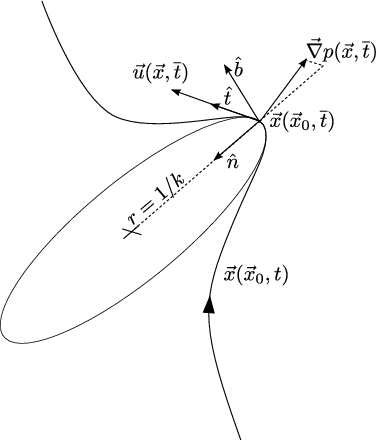

4.16. Approfondimenti su alcuni bilanci#
In questa sezione vengono analizzate alcune equazioni di bilancio in forma differenziale (è quindi necessario che queste equazioni siano valide!): vengono usate sia la rappresentazione euleriana sia la rappresentazione lagrangiana, al fine di ottenere la migliore comprensione dei fenomeni fisici coinvolti.
Si indicano con \(\mathbf{x}_0\) le coordinate lagrangiane, solidali con il continuo; si indicano con \(\mathbf{x}\) le coordinate euleriane. I due sistemi di coordinate sono legati tra di loro dalle relazioni
La derivata \(\partial/\partial t\) indica la derivata temporale fatta a coordinata euleriana \(\mathbf{x}\) costante. La derivata materiale \(D/D t\) indica la derivata fatta «a coordinata lagrangiana» costante e rappresenta quindi la variazione temporale di una quantità legata alla particella materiale, che si muove come il continuo, per la definizione di coordinate materiali.
Il legame tra \(D/Dt\) e \(\partial/\partial t\) si trova utilizzando le regole di derivazione per funzioni composte. Scrivendo la funzione generica \(f\) come
si ottiene
4.16.1. Continuità#
L’equazione di continuità può essere riscritta mettendo in evidenza la derivata materiale
É possibile dimostrare1 la relazione \(DJ/Dt = J \mathbf{\nabla} \cdot \mathbf{u}\), dove \(J\) indica il determinante del gradiente \(\partial \mathbf{x}/\partial \mathbf{x}_0\), si può scrivere l’equazione in coordinate lagrangiane, dopo averla moltiplicata per \(J\) (\(\ne 0\))
La variazione della densità di una particella materiale è legata alla variazione del volume della stessa (ricordare che \(dv = J dV\)). Questa conclusione è ragionevole se si pensa che la massa della particella materiale si conserva (\(dm = \rho dv = \rho_0 dV\)).
Il vincolo di incomprimibilità rappresenta la costanza del volume della particella materiale. Il volume \(dv\) coincide con il volume di riferimento \(dV\), implicando \(J \equiv 1\) e quindi \(\mathbf{\nabla} \cdot \mathbf{u} = 0\).
4.16.2. Quantità di moto#
L’equazione della quantità di moto è
dove con \(\mathbb{T}\) è stato indicato il tensore degli sforzi, che per un fluido newtoniano è \(\mathbb{T} = -p \mathbb{I} + \mathbb{S}\) con \(\mathbb{S} = 2 \mu \mathbb{D} + \lambda \left( \mathbf{\nabla} \cdot \mathbf{u} \right) \mathbb{I}\) e \(\mathbb{D} = \frac{1}{2} \left[ \mathbf{\nabla}\mathbf{u} + \mathbf{\nabla}^T \mathbf{u} \right]\) il tensore velocità di deformazione, parte simmetrica del gradiente della velocità. Introducendo la derivata materiale, si ritrova una forma «familiare» del secondo principio della dinamica
4.16.2.1. Richiami di geometria delle curve nello spazio.#
Una curva è un luogo di punti che può essere parametrizzato tramite un parametro solo. La parametrizzazione \(\mathbf{r}(t)\) della curva \(\mathbf{r}\) è definita regolare se \(d\mathbf{r}/dt \ne 0\). Si definisce poi una parametrizzazione regolare particolare, l’ascissa curvilinea \(s\) tale per cui \(\left| d\mathbf{r}(s)/ds \right| = 1, \forall s \in (a,b)\).
Nel seguito si introduce brevemente la terna di Frenet \(\left\{\mathbf{\hat{t}}, \mathbf{\hat{n}}, \mathbf{\hat{b}} \right\}\), formata dai versori tangente, normale e binormale, in funzione dell’ascissa curvilinea. Si dimostra che
La derivata seconda della posizione \(\mathbf{r}\), cioè la derivata prima del versore tangente \(\mathbf{\hat{t}}\) è legata al versore normale \(\mathbf{\hat{t}}\), tramite la curvatura \(k = \left| \frac{d\mathbf{\hat{t}}}{ ds} \right|\).
Il versore binormale è definito a completare la terna ortonormale destrorsa
Per completezza e senza troppo sforzo si calcolano anche le derivate di tali versori, ricordando che hanno modulo unitario e costante, e formano una terna ortogonale in ogni punto, introducendo la definizione della torsione \(\tau = \frac{d \mathbf{\hat{n}}}{ds}\cdot \mathbf{b}\).
Se la parametrizzazione regolare della curva non è l’ascissa curvilinea, si può ricavare
dove si è introdotto il modulo \(v\) di quella che sarà la velocità \(\mathbf{v}\) quando \(\mathbf{r}\) e \(t\) saranno spazio e tempo. In maniera analoga
Se \(\mathbf{r}\) e \(t\) sono spazio e tempo, la velocità e l’accelerazione di un punto che ha come legge oraria \(\mathbf{r}(t)\) sono
4.16.2.2. Ritorno al bilancio della quantità di moto.#
Inserendo la forma dell’accelerazione nell’equazione della quantità di moto e proiettando lungo i versori della terna di Frenet
L’analisi per componenti locali dell’equazione della quantità di moto permette di riconoscere che:

la proiezione del termine forzante lungo la tangente alla traiettoria è la responsabile dell’accelerazione tangenziale della particella materiale;
la proiezione del termine forzante lungo la normale alla traiettoria è la responsabile dell’accelerazione centripeta della particella maetriale e, di conseguenza, della curvatura della traiettoria;
la proiezione della forzante lungo la direzione binormale è nulla.
In assenza di forze di volume (\(\mathbf{f}=0\)) e sforzi viscosi (\(\mathbb{T}=\mathbb{S}-p\mathbb{I}=-p\mathbb{I}\)):
e quindi:
l’accelerazione tangenziale è proporzionale alla proiezione del gradiente di pressione in direzione tangente alla tratiettoria;
l’accelerazione centripeta, \(v^2/r = v^2 k\), è proporzionale alla proiezione del gradiente di pressione in direzione normale alla tratiettoria. Il termine \(\rho v^2 k\) è sempre positivo poichè prodotto di quantità positive: la curvatura di una linea è non negativa per come è definita, la densità è positiva, il modulo di un vettore è anch’esso non negativo. Il prodotto scalare tra la normale e il gradiente della pressione (derivata direzionale della pressione in direzione \(\mathbf{\hat{n}}\)) deve quindi essere negativo. La pressione quindi diminuisce, andando verso il centro del cerchio osculatore. Sempre dalla seconda equazione è immediato notare che la curvatura della traiettoria è proporzionale alla componente del gradiente di pressione lungo il versore normale;
la proiezione del gradiente di pressione in direzione binormale a una traiettoria è nullo.
4.16.3. Vorticità#
L’equazione della vorticità in coordinate euleriane è
Se viene fatta l’ipotesi di viscosità nulla, il termine contenente il laplaciano della vorticità non compare nell’equazione: questo termine è il responsabile della diffusione (isotropa per come è scritto) della vorticità.
L’equazione può essere quindi riscritta come:
Scritta in componenti
Il termine di destra può essere riscritto come
Vale la relazione
Il termine di sinistra può essere riscritto come
Inserendo nell’equazione della vorticità e sfruttando le proprietà della derivata del prodotto:
Se la trasformazione non è singolare, risulta quindi
e in conclusione, invertendo il gradiente della trasformazione delle coordinate
Si può quindi notare che la vorticità segue la stessa evoluzione di un segmento infinitesimo materiale, per il quale vale:
- 1
I più curiosi, cerchino «fornmula di Jacobi».